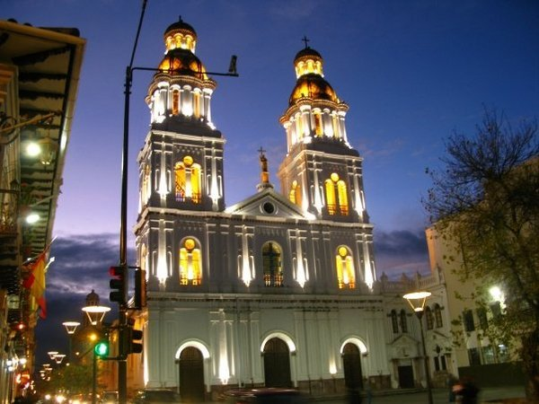
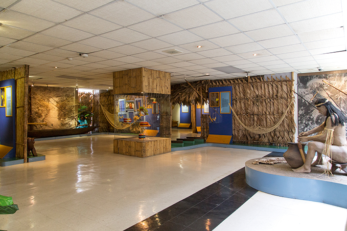

Desde el inicio de su construcción alrededor de 1885 hasta su finalización en 1985,
y su estilo arquitectónico Gótico Renancetista inspirada en la
Basílica de San Pedro (Roma) ha sido una de las obras arquitectónicas
más notables del Ecuador.
Debido a la complejidad y la elegancia de su diseño, en 1999 fue inscrita como
Patrimonio de la Humanidad por la UNESCO.
Iglesias

Cuenca cuenta con un amplio número de iglesias, cada una de ellas con sus
peculiaridades, tamaños y formas. Se distribuyen por toda la ciudad generando
también varias rutas turísticas para aquellos que les guste la arquitectura.
Iglesia San Sebastián
Iglesia Santo Cenáculo
Iglesia Santo Domingo
Iglesia San Francisco
Iglesia San Alfonso
Iglesia de las Conceptas
Iglesia San Blas
Iglesia de Turi
Principales Museos
Pumapungo

Es un museo en donde se expone principalmente antropología,
etnografía, arte y arqueología. Afortunadamente para el público,
sus recursos son gratuitos y hau libertad para acceder al conocimiento
plasmado en sus exhibiciones. Cuenta con cinco secciones.
Sala Pumapunku, Exposiciones de artesanías.
Sala nacional de Etnografía, Muestra diversas etnias.
Sala de Arte, Contiene esculturas y pinturas.
Biblioteca Victor Manuel Albornoz, Contiene varios recursos sobre la historia local y nacional.
Fondo Audiovisual, Recoge las memorias de producciones cinematográficas.
En el siguiente video puedes obtener una mejor vista del interior del gran museo, además de
algunas de sus colecciones en cuanto a música, arte, culturas del ecuador, entre otros.
Museos
Al igual que la cantidad de iglesias, Cuenca tiene también una gran variedad de museos.
Museos que van desde la exposición de obras de arte, artesanías religiosas, artesanías locales
hasta objetos del pasado que fueron parte de nuestra historia.
Aunque varias de estos lugares sean de entrada libre y gratuita, hay varios que cobran un
pequeño costo de ingreso, que rondan los dos dólares americanos.
De Historia de la Medicina: Expone la trayectoria médica local.
De Esqueletología: Expone alrededor de 150 exqueletos de diferentes especies.
De las Conceptas: Expone piezas de arte religioso.
De Identidad Cañari: Expone una gran variedad de piezas arqueológicas cañari.
De Arte Moderno: Expone de manera temporal obras de arte moderno y contemporáneo.